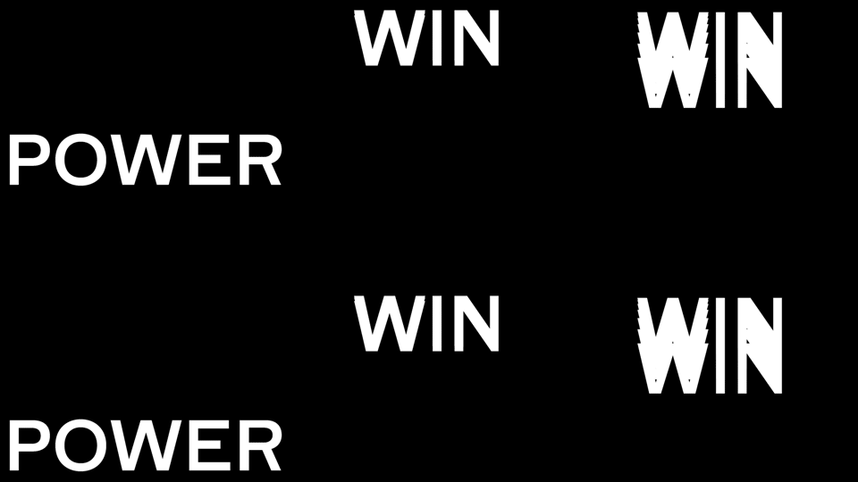
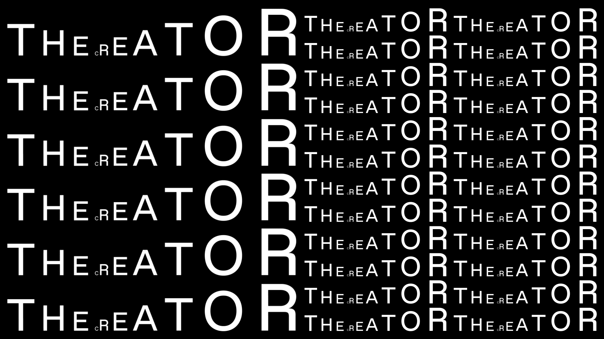
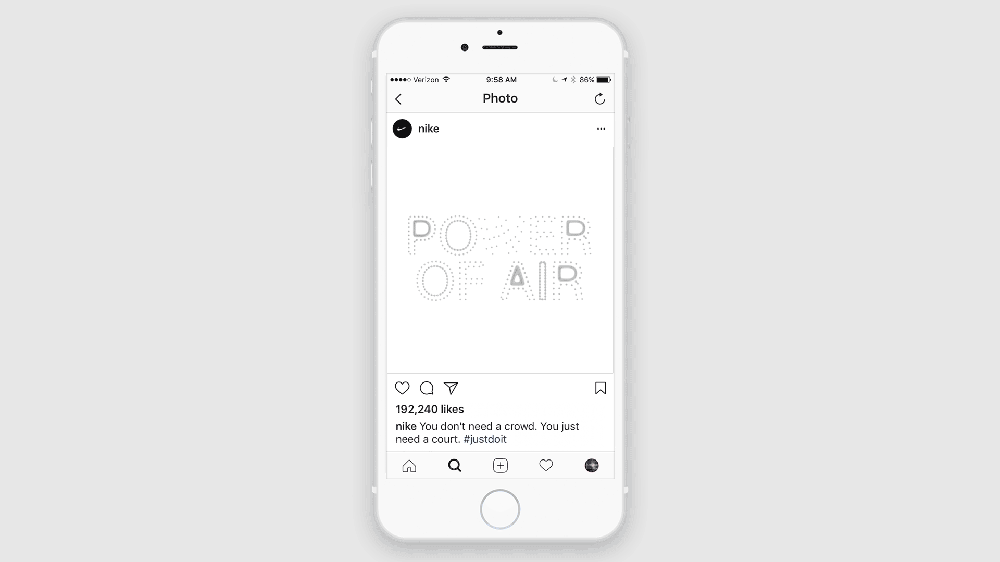
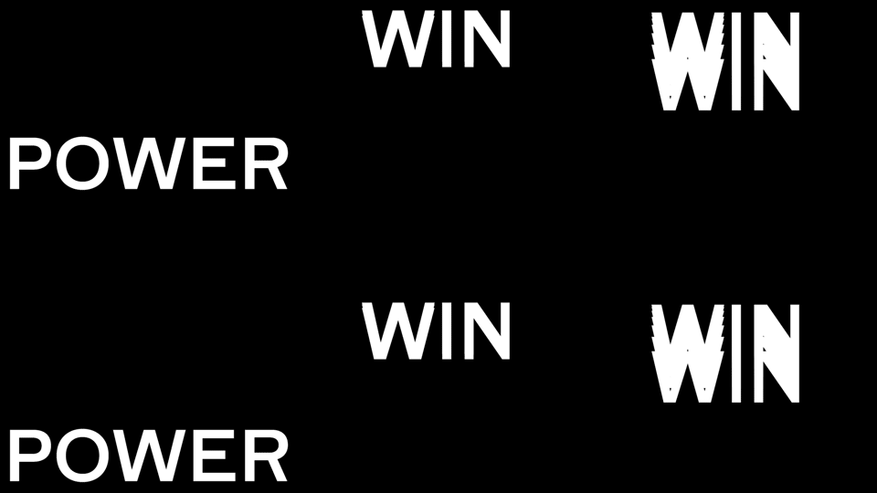
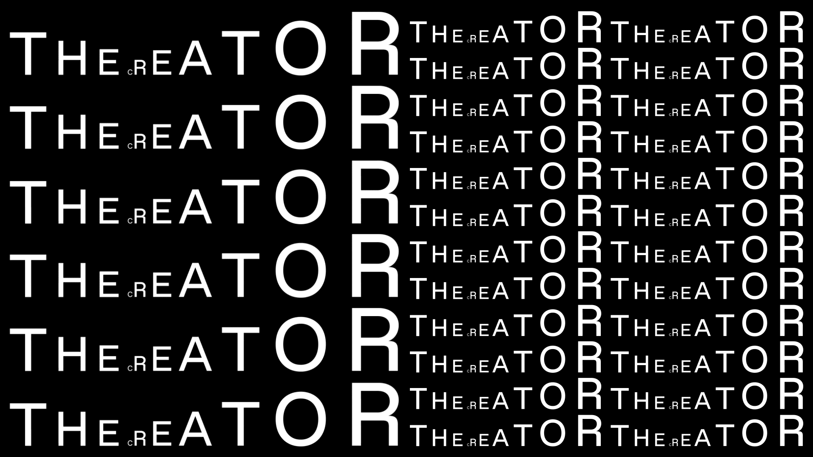
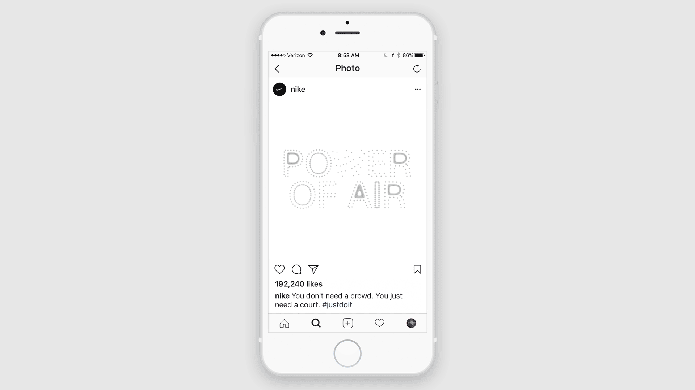

DIA is a design studio specializing in kinetic typographically driven identity systems, located in Brooklyn, NY. Recently, they completed a project for Nike Basketball that included experimental typographic animations designed to be displayed on a series of platforms including instagram, digital billboards, and LED screens.
“We approached the series of animations by exploring the meaning of each phrase and visualizing basketball’s energy and motion. We fused the design and animation process as one, resulting in pieces with no end or beginning. These unique loops create a hypnotic impressions that is impactful in both large andAs we’ve been drifting farther and farther away from modularity within individual characters
small formats.”
of a typeface, we’re now able to explore modularity on increasingly larger scales; this is the lens through which this branding project will be explored. In this case, modularity is made evident through motion. Here, the individual letters behave in the same way many of the combinatorial typefaces we explored earlier did. Scale is arguably the most evident variable in this project, allowing this project to exist within the realm of modularity
via kineticism.